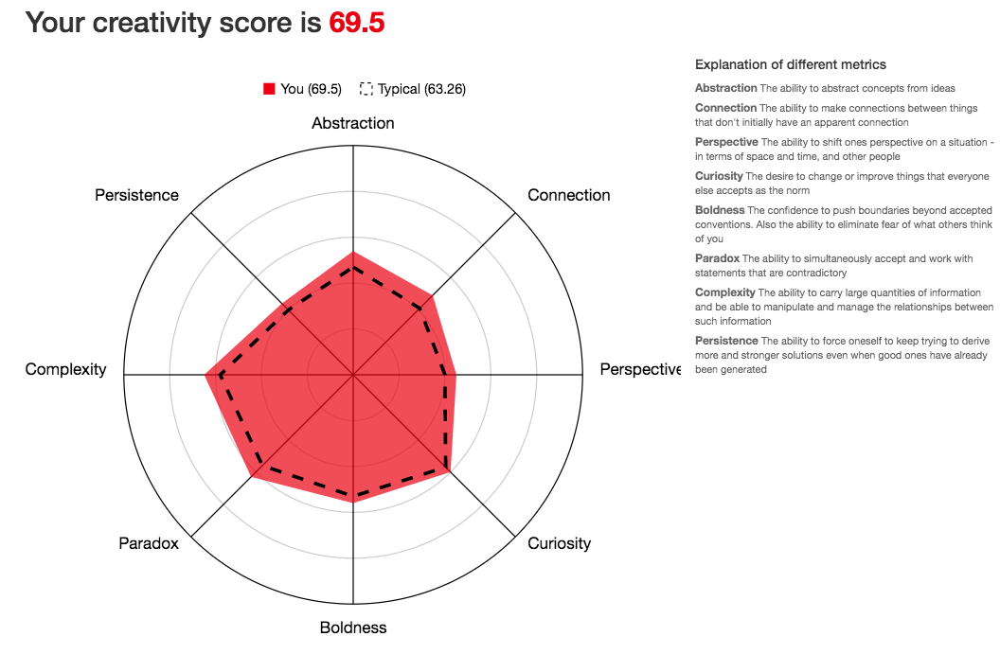
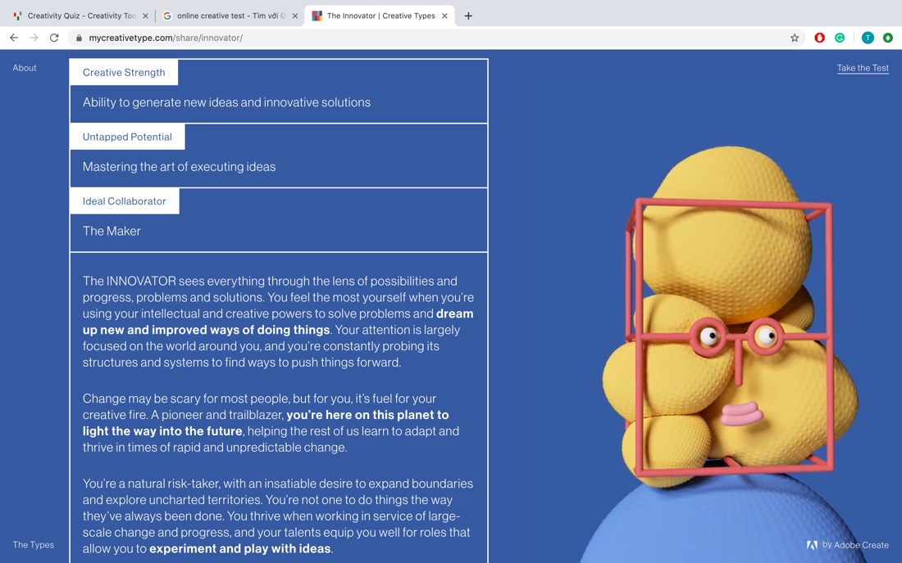
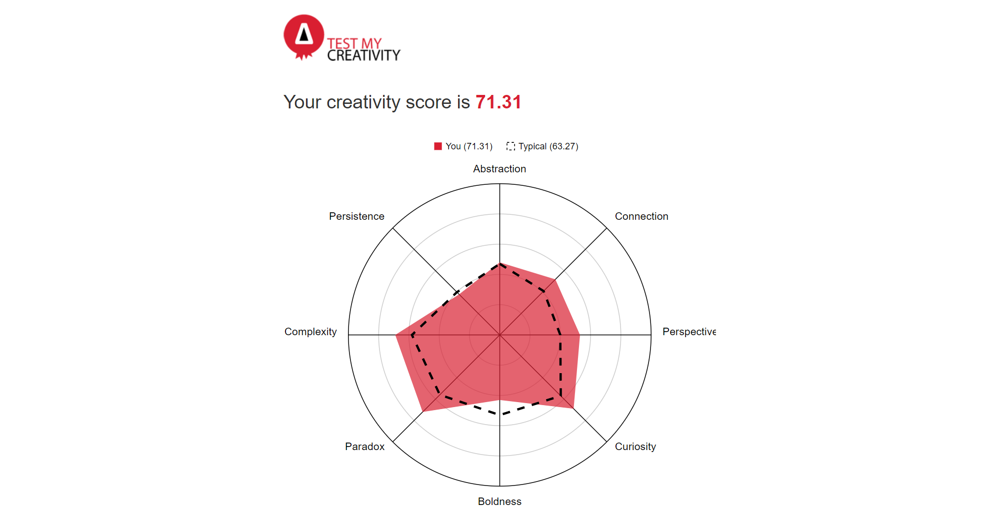

Team Profile
Personal Information
Thinh: My name is Thinh, ID: 3825459. I am from Ho Chi Minh City, Vietnam. This is my first semester in RMIT Vietnam. I can speak Vietnamese and English. I play Super Smash Bros. Ultimate competitively. My IT interest is AI, specifically natural language processing, humanlike robots and sentient AI. At the moment, I am an undergraduate student at RMIT in the IT program. I have taken classes in programming and computer science and have gotten excellent grades in those classes. I have participated in a mentorship program where I have to do research within a team and done a presentation at the end. I am confident in my skills in programming and my skill to further learn subjects related to IT and computer science. My team name is Mjolnir.
Han Sang Yeob: Hello everyone! My name is Han Sang Yeob. However, I introduce myself as ‘Tony’ in RMIT. I am from south Korea. My student number is S3821179. I can speak Korean, English and little bit of Vietnamese. Before joining in RMIT, I have worked around 1 year as a tour guide in HCM. I thought that I could learn more things about Vietnam which I really desire to do my business in the future. My major was Mechanical engineering design when I was in university in Korea which I dropped. Most of the mechanical engineering part was about hardware while my interest was in software. I am sure that software would have more demand than hardware in the near future. I love drinking coffee in the morning in café and organizing my thoughts. That 30 minutes makes my day more productive. When I was in university in Korea, I have done some projects about line tracer, electric motor skateboard and IoT using 3D print and Arduino. My programming skills are not advanced like other mates, but I am willing to learn happily from my mistakes and my teammate’s feedback. My team name is Mjolnir.
Nga: I am Nga Hoang from Ho Chi Minh City, Vietnam. I speak Vietnamese, English and Mandarin, where Vietnamese is my native language. I commenced RMIT University in Bachelor of Business Management in Saigon South Campus in 2016. I spent a year in RMIT Melbourne as an exchange student to expand my understanding about the world and expose myself to a diverse cultural environment from 2018. My goal in life is to become a financially successful person whilst also having freedom to do what I enjoy. I also learn Mandarin because of its potential values in the business industry. I enjoy applying what I have learned into everyday situations and discussing or sharing my knowledge with other people that I am acquainted with as I think it is a way to strengthen your understanding, learn new information and make good connections at the same time. My team name is Mjolnir.
Thang: Hello, my name is Nguyen Quoc Thang, id 3806617. I’m from Hanoi and just move in Ho Chi Minh city recently. I’m still adjusting to the new environment here but so far, it’s been pretty exciting and fun. I speak Vietnamese and fluent in English (I hope). I’m also the founder of a volunteer club in Hanoi (called Youth of Phan Dinh Phung). In my free time, I like to play basketball and football. I also very like MMA (Mixed Martial Art) and I’m currently taking an MMA class. I can play the piano as well and I really like to watch movies. My favorite director is Christopher Nolan. I have taken a few online courses on computer science on codeacademy but I still have many thing to learn. I’m really interested in blockchain technology. It has a lot of advantages over current technologies such as decentralization, immutability, security, and transparency. I believe that blockchain will be the future of global economy. My team name is Mjolnir.
Nguyen: Hello, I am Truong Khoi Nguyen, ID: 3818221. I come from the bustling city of Ho Chi Minh, Vietnam. I am currently a student of RMIT University Vietnam, Bachelor of Information Technology, which I find to be very fortunate of myself. I can speak fluent Vietnamese and English. Apart from writing codes (which I am still learning how to), I spend my free time writing songs and let my soul be filled with mesmerizing sound of musical instruments. I really want to know more about AI/Deep learning/Machine learning since the concept would occupy the world soon. I studied a bit about C++, simple Python, and know the basic principles of PCs’ hardware. Still, there is still a long way to go, but I am excited to be where I am right now. My team name is Mjolnir.
Tuan: Hi, I am Nguyen Anh Tuan and my student ID is 3818169. I was originally born in Vinh Long but later moved to Nha Trang and spent most of my time living and studying there. In my free time, I usually play computer games and listen to music. My favorite game is CS: GO and I have spent more than 2800 hours playing it. Personally, I am interested in the game developing aspect of IT. Ever since I was a child, I’ve always wanted to become a game programmer and make a living out of it. Currently, I still have little knowledge about coding and diverse facets of IT. However, I am taking classes about coding and computer’s hardware and hope that in my 3 years at RMIT, I will be able to know more about the IT world and essential skills to help me with my job. My team name is Mjolnir.
Team Profile
- Meyers-Briggs: ENTP (Debater)
- Learning Style: Auditory learner
- Big Five Personality
The test I think that is the most useful in this group scenario is the Meyers-Briggs test. I have the ENTP type. According to the descriptions, I tend to find the most logical ways to complete a goal. I like to think of creative and original solutions for a given problem. I think this information is useful when the group hits a wall during the assignment (as it tends to happen during group projects), I can help coming up with solutions. I also like figuring things out and finding many ways to complete one task (in order to find the best way) so I think I can help steer a team into the right direction where I think it’s the best way to complete some goals.
- Meyers-Briggs: ENTP (Debater)
- Learning Style: Visual learner
- Human Metrics
Personally, I really agree on Meyers-Briggs personality test. For me, I consider future potential most important rather than just compromising in the present. I’m happy to take what I am not capable of it because I know that I really like taking the risk when comes to decision making. Although it might not be satisfied with the result, I know that I got something from the challenging task and it helped me getting improve. Based on my personality, I could support my team to challenge new things which we might not capable of it. Our teammates might not finish the tasks but I am sure that they will gain practical knowledge from it.
- Meyers-Briggs: ISFJ (Defender)
- Learning Style: Visual learner
- Creativity Test:
For the personality test, the outcome says that I am a supporter and that I “seek a frictionless environment, a spirit of friends helping friends to get the job done”. I think this is a good point as I look at other members’ results, they belong to different personality types and diversity will come with conflicts, which my personality will help to alleviate and we all can focus on what really matters.
Next, the result says my learning style is balanced between visual and auditory. Thus, I can help everyone understand and present our ideas effectively and efficiently. Group discussion will also help me grasp everyone ideas. Combining with the result from the creativity test, which shows that I can work with a large amount of information and manage the relationship between such information, I might contribute new ideas to the team based on the collected information. Otherwise, I can find the link between that information and make use of it.
- Meyers-Briggs: ENFJ-T (Protagonist)
- Learning Style: Kinesthetic and visual learner
- Adobe Creative Test:
I think that the result of all three test is very accurate. The Myers-Briggs test and adobe creative test describe exactly my personality. I’m a very outgoing and creative person. I see the best in people. When facing with a problem, I always try to find the most creative and efficient solution. While most people fear changes, for me, it is a chance to gain more knowledge and experience. I really like to challenge myself by setting up big goals to accomplish or trying to adapt to new environment whenever I got the chance. This is the main reason why I chose to study in RMIT Ho Chi Minh rather than RMIT Ha Noi. The learning style test is also fairly accurate. I find myself to study more effectively when I can see examples to the problems or when I can actually solve the problem. I’m not the biggest fan of just sitting in the theatre and listening to lectures but I’m more excited for real practice in the computer lab.
- Meyers-Briggs: INFP-A (Mediator)
- Learning Style: Kinesthetic learner
- Creativity Test:
I strongly believe that any type of personality can always work well together, if one knows who he or she is, and one must have the key factors of a teammate: reliability and responsibility. Each person has his or her own way to solve a problem as well as advantages and disadvantages. It is good to know the personality of each one, but how you deal with it does not really matter to the big picture of teamwork. Finish your task, respect and help each other, and you will eventually move forward with your team. With that mindset, I am comfortable and confident with my performance within a group project.
- Meyers-Briggs: ISFP-A (Adventurer)
- Learning Style: Visual learner
- Big Five Personality
From my point of view, these test results are quite precise. According to the Myers-Briggs test, I am the type of person who has a strong passion, I can spend hour after hour trying my best in what I enjoy doing. Furthermore, I am also sensitive to others’ felling, which I can use to encourage my teammates when they’re having troubles and minimize conflict between them.
Ideal Jobs
Compare and contrast the ideal jobs for each person in the group. What common elements are there, if any? What differentiates each position from the others, if anything?
Our group ideal jobs are very diverse. Each people seem to be interested in a different field: IoT, Cyber security, Gaming, AI, Business and different position from low to high: researcher, developer to even manager. Although it may feel like our jobs have nothing in common but there are actually some compulsory requirements that we all have to satisfied. All of our jobs need a lot of practical experience. School does not directly teach essential skills for the real world like teamwork, time management, decision making, ... These types of skills are ones you can only learn in a working environment, not in a classroom. Moreover, Practical experience can help you to get ahead in the competitive job market. Getting any kind of work experience will help you to stand out from other applicants. Our group ideal jobs will also require basic understanding of computer technology and IT infrastructure. As we are at the beginning of industry 4.0, almost all the jobs are now somewhat related to digital technology (cloud computing, IoT...). In order for employees to work more efficiently, they must know how to use and utilize their company IT infrastructure and technology. Apart from this, our ideal jobs are very different from each other. Some jobs like game developer or AI researcher will have a better time looking for work outside of Vietnam. In other developing countries, gaming is a billion-dollar industry and AI is being focused on because of its convenience and useful practice in many fields. But in Viet Nam, Gaming is a young industry and AI is still a very new technology. Some of our jobs like cyber security/operation manager or AI engineer need higher qualification (PhD, master), experience than others. Often Business, IT professionals gain or improve some of their most marketable skills through a master's degree program. Many universities have worldwide partnerships with corporations, studying a master program will also provide the opportunity to gain international experience and travel to several different countries to gain insights from leading global experts.
How similar or different are your career plans across the group?
Overall, everyone has a plan to pursue their dream jobs. The similarities among these career plans are most of us want to graduate with a high GPA, self-study on technical skills and self-develop soft skills. As a bachelor’s qualification is a minimum requirement for almost all positions, our career plans include that and with distinction or higher degree. Moreover, as all positions require experiences and technical knowledge, we all encompass the self-study factor, which we will get the specific knowledge by ourselves beside the courses in university. For examples, many members want to learn various coding languages through courses online in their own time. Although we could not have on-the-job experience while studying, we all came up with the same idea of either internship or joining projects and researches before graduation. This will not enough to alternate real experiences but to give us an idea, a preparation for future work. Further, this kind of activity will also target soft skills, such as critical thinking, team working, communication and human skills, which are also a pattern in the requirements.
Our career plans also have some differences. First, some career plans state to pursue higher education to increase the chance of getting the job. Thinh and Nguyen’s plans mentioned their intentions to further study of getting master’s and PhDs qualifications. Second, some of the positions have more prospect of growth overseas rather than Vietnam. IT fields like AI and IoT have more room to grow and learn in a globalized context. This is also why most members believe that they want to belong in an international company or work outside of Vietnam when they get the job.